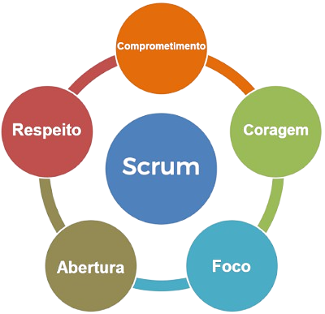

O começo
"Os seus criadores, Jeff Sutherland e Ken Schwaber, sugerem que a sua inspiração foi o artigo “The new product development game: stop running the relay race and take up rugby”, escrito pelos professores japoneses Takeushi e Nonaka e publicado em 1986. A analogia utilizada no artigo faz alusão à forma como os times de desenvolvimento de produtos realizavam a sua operação em diversos tipos de segmento, como uma equipe no jogo de rugby. A palavra “Scrum” aparece no artigo, ainda que de forma tímida, apenas uma vez. Posteriormente, a mesma metáfora seria utilizada por Degrace e Stahl (1990), ainda que não da forma estruturada que Sutherland e Schwaber apresentaram em 1993 quando lançaram o framework."
3 Pilares
O Scrum trabalha com três pilares empíricos: transparência, inspeção e adaptação,a
transparência permite a inspeção.
Inspeção sem transparência é enganosa e gera desperdício.
A
transparência permite a inspeção, e a inspeção sem transparência é enganosa, podendo chegar ao
limite da patologia organizacional se não resolvida. A inspeção também favorece a adaptação, dado
que o Scrum é projetado para provocar mudanças. Na prática, o time Scrum se adapta à medida que
aprende algo novo na inspeção.
Valores Scrum
"Valores do Scrum No contexto do Scrum, os valores desempenham um papel fundamental. Eles definem o comportamento e a atitude que devem ser adotados pela equipe durante a execução de um projeto. Os valores do Scrum são transversais a todos os seus processos e ajudam a criar uma cultura de colaboração, transparência e respeito mútuo."

Tipologias de ciclos de vida
- Ciclo Preditivo (Waterfall): Planejamento detalhado com escopo fixo, entrega única no final do projeto, requer gestão formal de mudanças.
- Ciclo Iterativo: Progresso por meio de iterações contínuas, feedback do usuário orienta refinamentos.
- Ciclo Incremental: Entrega do produto em etapas (incrementos), cada um adicionando funcionalidades, não necessariamente refinados futuramente.
- Ciclo Adaptativo (Ágil): Combinação de abordagens iterativas e incrementais, entrega parcial do produto refinado com base no feedback contínuo dos usuários.